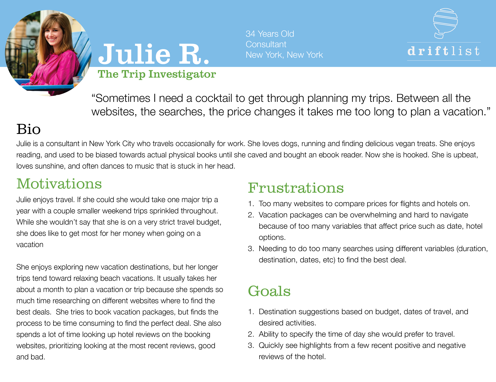
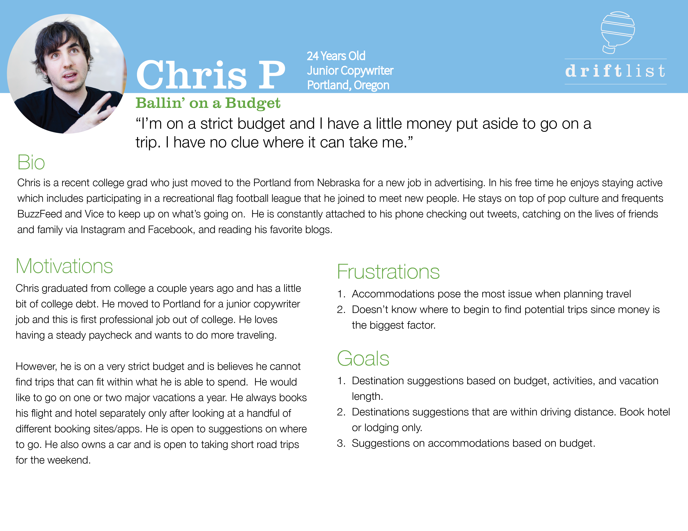
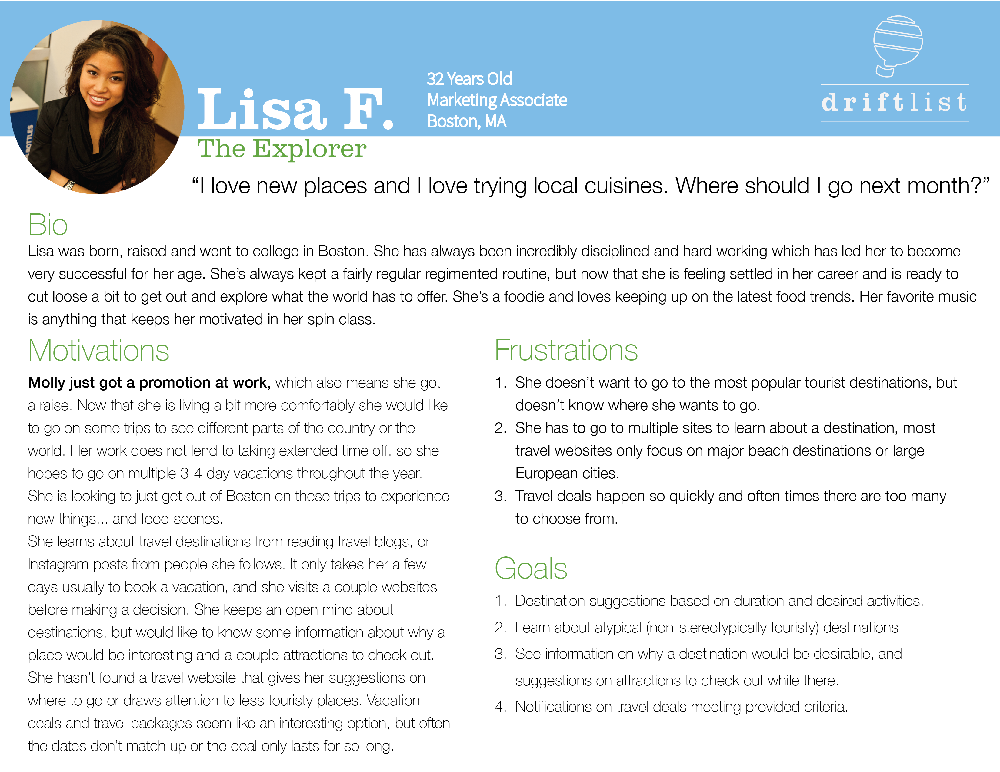

Designed to help people easily discover exciting travel destinations within their budgets.
Ask a handful of people what they would do if they had more money, and many of them would say they would get out and travel. DriftList is an iOS app designed to help people easily discover exciting travel destinations within their budgets.
People shouldn’t need a vacation from planning their vacations. Unfortunately, for the many living on very strict budgets planning a memorable trip can quickly go from an exciting to painful. There are many websites claiming to offer travelers the best deal and prices can seem to change from one day to another. In addition to the several different travel sites, each website offers an infinite number of options for flight times, airlines and hotels -- for only one destination. If customers know they want to go on a beautiful sunny beach vacation they’ll have to go through the potentially endless process of comparing airline/flight/hotel combinations for multiple destinations to find the perfect destination within their budgets. Miami? Cancun? San Diego? Tampa? Talk about decision fatigue!
The inspiration for creating DriftList originated with my own frustrations with trying to plan vacations. I had a very limited travel budget, but wanted to explore new places (i.e. find all the places with the best food scenes). Between the multiple browser tabs, and creating spreadsheets of the different travel combinations the process of planning a trip made me want to pull my hair out.
Less is more, and turn the process of planning a trip upside down. DriftList changes the way travelers book their trips and discover new destinations. The world is an enormous place and sometimes people need guidance to plan vacations that not only give them unforgettable experiences but also fit their budgets. With DriftList customers can specify their travel budget, the time periods they are looking to travel, and the types of activities they are looking for on their vacation. From there DriftList introduces users to a wonderful list of destinations that will give them what they are looking for in a vacation, some they have heard of and maybe some others they had never considered before!
While I had very strong feelings about the problem at hand and what I thought could solve this problem I needed to better understand the perspective of The People. I needed to get immersed in who they were and what their habits were. To get to that place I created a user survey to learn, among other things, the following:
This survey was distributed across social media and online forums and completed by nearly 50 respondents. The results were astounding and some of the key insights gained included:
* Both of these significantly increased when removing the results respondents who had prioritized a specific destination as the most important factor when planning a trip.
With this information, I could move confidently forward with the developing the concept of DriftList. It was clear from these survey results, that the frustration was real among those wanting to travel on a budget to find a better solution.
Although I had the survey results to confirm my original suspicions it was important to frame these answers and numbers into something more tangible and real. I conducted follow-up interviews with a small number of respondents to dig deeper into their responses, and better understand their attitudes towards the problem and my proposed solution. These candid conversations allowed me to develop the following personas to keep me accountable to my users as I designed DriftList.
  A major pain point identified by the survey respondents was the number of travel websites on the market purporting to offer customers the best travel deals. As a result the next crucial step I needed to take was digging deep into the major players of the travel booking market. I needed to have a command of the things they were doing well and identify where they were falling short.